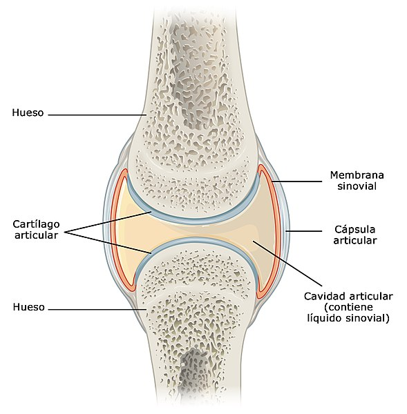
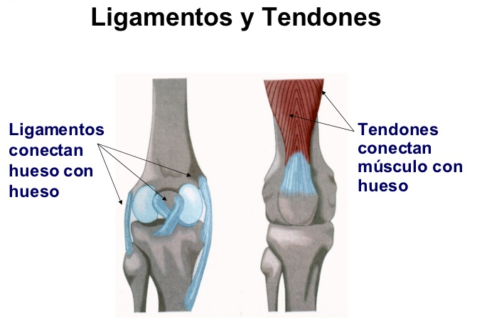

El sistema óseo constituye una estructura compleja compuesta por diversos tipos de huesos que conforman el esqueleto humano.
Este sistema desempeña funciones fundamentales, tales como proporcionar soporte al organismo y garantizar la protección esencial de los órganos internos. En colaboración con el sistema muscular y las articulaciones el sistema óseo conforma el aparato locomotor del cuerpo humano, el que nos permite realizar una amplia gama de movimientos, desde caminar, correr hasta gesticular y bailar.
El esqueleto humano abarca la totalidad de los huesos corporales, aproximadamente 206 y representa un 12 % del peso total del organismo. Entre estos huesos se encuentran una masa de cartílagos, tendones y ligamentos que actúan como respaldo para prevenir el roce entre las estructuras óseas y facilitar la articulación del esqueleto.
Huesos
Son estructuras rígidas mineralizadas principalmente con calcio y otros metales, constituyen las partes más duras y resistentes tanto del cuerpo humano como de los animales vertebrados. En su interior alberga la médula ósea encargada de funciones hematopoyéticas es decir, la producción de glóbulos rojos sanguíneos.
Cartílagos
Están ubicados en los extremos de los huesos, los cartílagos desempeñan un papel crucial al proporcionar amortiguación, evitando el roce directo entre las estructuras óseas y por ende previniendo el desgaste.

{kind=link}
Ligamentos
Son tejidos fibrosos, resistentes, densos y elásticos que conectan los huesos en los puntos de rotación, es decir, las articulaciones. Su función es vital tanto para el movimiento coordinado como para prevenir desplazamientos antinaturales de los huesos.
Tendones
Son tejidos fibrosos, gruesos y elásticos que conectan la musculatura a las partes rígidas de los huesos. Esta conexión facilita la transmisión de la fuerza generada por las células musculares a los huesos, posibilitando así el movimiento voluntario del organismo.
